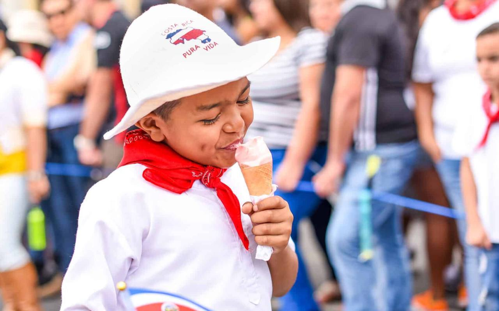

Ready to fish Guanacaste?
Seventeen boats, two bases, one honest recommendation.

As we approach September 15th, 2024, Costa Rica is gearing up for its biggest national celebration: Independence Day. This day marks the anniversary of Costa Rica’s independence from Spain in 1821, and it’s a time when the entire nation comes alive with vibrant parades, traditional music, and patriotic pride. In the Guanacaste region, cities like Liberia and Santa Cruz are already buzzing with preparations, making August the perfect time to plan your visit and immerse yourself in the festivities.
Guanacaste is known for its deep cultural traditions, and Independence Day is no exception. The celebrations are centered around two key events: the “Desfile de Faroles” (Lantern Parade) on the evening of September 14th, and the big parades on the 15th, featuring traditional dances, music, and colorful costumes.
The Desfile de Faroles is a deeply symbolic event. Thousands of children across the country make and carry lanterns, representing the journey of freedom taken by Central America in 1821 when news of independence spread from Guatemala to Costa Rica by torchlight. The sight of glowing lanterns lighting up the streets is a magical experience, and in Guanacaste, this parade is often accompanied by live marimba music—a traditional musical staple in the region.
On September 15th, the streets of Liberia, the capital of Guanacaste, will host the patriotic parades. School bands, community groups, and folk dancers come together to perform in honor of Costa Rica’s independence. The highlight of the day is the performance of the Punto Guanacasteco, a traditional dance that embodies the spirit and pride of the province.
Independence Day isn’t just about parades and lanterns—it’s also a chance to experience the best of Costa Rican culture. Throughout Guanacaste, local communities will host street fairs, where visitors can enjoy traditional Costa Rican dishes like gallo pinto, arroz con pollo, and empanadas. Vendors will offer handmade crafts, and there will be performances by local musicians, including plenty of marimba and folk music.
Guanacaste’s strong cowboy culture also shines during Independence Day. Don’t be surprised if you see local horse parades, known as topes, where skilled riders showcase their horsemanship. These topes are a popular feature in towns like Santa Cruz, adding an extra layer of excitement to the celebrations.
Join the Celebration!
Whether you're a local or visiting Costa Rica for the first time, the Independence Day festivities are an experience not to be missed. The colorful parades, the music, the food, and the vibrant atmosphere all come together to create a celebration that is both a nod to the past and a showcase of modern Costa Rican pride.
If you're in Guanacaste, make sure to visit Liberia or Santa Cruz to catch the main events. But no matter where you are in Costa Rica, you’ll feel the festive energy as the country comes together to honor its independence.
With just a month to go, now is the perfect time to finalize your plans for September 15th. Whether you're staying near the beaches of Tamarindo or the cultural hub of Liberia, Independence Day in Costa Rica is an experience you’ll never forget!
Next up: Wellness Retreats in Guanacaste: Where to Relax and Recharge in 2024 · All posts
Seventeen boats, two bases, one honest recommendation.